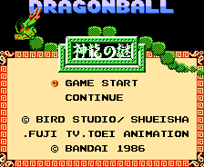
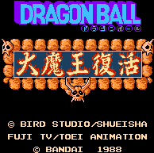
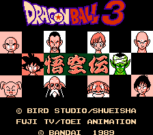
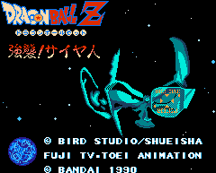
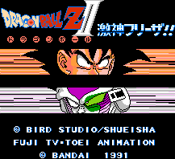
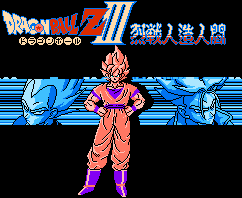
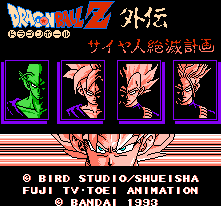

Dragonball (Z) - Nintendo Games

Controls
- A button: Jump
- B button: Attack
- Start: Pause
- Select: Skip over dialogue screens
From Roger Nystrom:
This is the very first Dragon Ball Game, and the title translates as The Secret of Shen Long (Holy Dragon). This
game was also reedited (many argue rather poorly) as Dragon Power here in the US. The game follows the now
famous mountain-boy Gokuu as he and genius-girl Bulma look for the seven Dragon Balls; which, when put together,
summons Shen Long and allows one wish to be made.
Gokuu loses power when touched by enemies, but also loses power over time (supposedly this is hunger kicking in).
To counter this, Gokuu can find various candies or snacks when he defeats enemies. He can also find different types of
staffs (one normal, one which makes Gokuu a spinning dervish), panties (makes you run faster), and keys. If you can't
get anywhere, you should try to defeat enemies or bust open pots for keys.
The game play is very sporadic. Sometimes it's a complete mystery as to what you're to do next, and the
hunger factor adds in even more frustration. However, the simple novelty of this being true to the Dragon Ball
storyline may be enough to some people.
When you see a shell show up on the top of the screen, this means you can do a
Kamehameha. To do this, hold down the B button, and then press A button.

Controls
- A button: Make Selection
- B button: Cancel Selection
- Start: [Not Used]
- Select: Bring up Menu
From Roger Nystrom:
The second game (translated as Great Demon King's Revival) introduces us not only to Piccolo Daimaou but also
to the Battle Card system, used in the rest of the DB games for the NES.
The game contains a unique adventure system when Gokuu is in various locales like the Kame House. More
specifically, Gokuu can maintain an inventory, search, talk, examine items, and move around in an area. Through this,
Gokuu and get clues and necessary items in order to proceed. This, however, also means that Japanese knowledge is
more necessary.
As he finishes one area, the road ahead of him is protrayed as a game board, and Gokuu selects cards marked with
numbers that act like dice. As Gokuu lands on various spaces, Kamesennin asks him to pick from face-down cards;
some are bonuses; some are mini-games. However, a number of them are Piccolo cards which cause one of the
Daimaou's hordes to fight you including his henchmen Cymbal and Tambourine.
When Gokuu gets attacked, the battle cards are used once more; this time the object being is to deal the strongest
cards. The fight is shown in little animated panels, and the process is repeated until one person remains
standing.

Controls
- A button: Make Selection
- B button: Cancel Selection
- Start: [Not Used]
- Select: Bring up Menu
From Roger Nystrom:
The Legend of Gokuu continues along the same vein as Daimou Fukkatsu in that the battle card system
and the adventure/game board elements remain in this game. However, the adventure element is toned down
concentrating on battles which now look graphically better than the ones in part 2. Also, Kamesennin no longer shows
up between landing on spaces, and the board spaces now have icons. Some lead to card games; some lead to instant
battle. There are now item cards to use (to up your HP, etc.), and other characters show up as Gokuu gets ready to
fight Piccolo Jr. in the Tenkaichi Budokai.

Controls
- A button: Make Selection
- B button: Cancel Selection
- Start: Bring up Menu
- Select: [Not Used]
From Roger Nystrom:
Attack! Saiyajin follows Gokuu and Piccolo as they try to save Gohan from Radditz, then Garlick's attacks, and
then concludes with a battle against Nappa and Vegeta. This is a game using an improved version of the DB battle card
system. The graphics in this game have improved quite a bit as the battles are now acted out. The adventure
element is pretty much gone in this game, leaving a more RPG-ish feel to the game. Other characters (Gohan,
Piccolo, etc.) come under control and can all use their special attacks (such as the Kamehameha and Tenshinhan's
body split). You can fight more than one enemy at a time adding more challenge, but this also makes the game suspect
to being ganged up on.

Controls
- A button: Make Selection
- B button: Cancel Selection/Show Map
- Start: [Not Used]
- Select: [Not Used]
From Roger Nystrom:
This game follows the chapter of DBZ where Gohan and gang need to get to Namek and find the Dragon Balls only to find
Freeza on Namek. The player must get to Namek, search for the Dragon Balls, fight the Ginyuu Squad, and finally face
off with Freeza. This game makes slight improvements upon the first game but brings back selecting a card after each
move on the game board. You may get an item card (such as Bulma, who increases your HP), or you'll get a Freeza card
which means you'll get attacked.

Controls
- A button: Make Selection
- B button: Cancel Selection
- Start: [Not Used]
- Select: [Not Used]
From Roger Nystrom:
Fight to the Death Against the Cyborgs has the most story and action of the 3 DBZ battle card games. Goku needs
to get to Namek, fight against Cyborg Freeza, unite the Dragon Balls, fight Coola, then Dr. Gero and his cyborgs, and
THEN Cell! The is thethird in the DBZ battle card games. The fight scenes are sped up a bit, and the graphics again
are slightly improved. Vegeta comes under control in this game.

Controls
- A button: Make Selection
- B button: Cancel Selection
- Start: [Not Used]
- Select: Bring up Menu
From Roger Nystrom:
Dragon Ball Z Legends: The Plan to Destroy the Saiyajins is an original DBZ storyline as Dr. Raichi uses
biogenetically engineered fighters to take over the world. Goku, Gohan, and the Z Senshi witness the return of old
baddies including Freeza! Again, this is a battle card game featuring an auto-select function that's actually helpful.
The battle scenes go extraordinarilyfast; the older DBZ card games had battle scenes that, after a while,
became boring, and this extreme speed boost solves this.
Anime Video Game Resource Center © 1998 by Luis A. Cruz